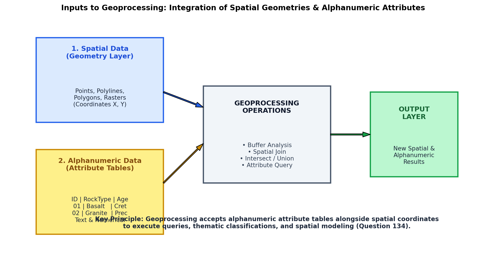
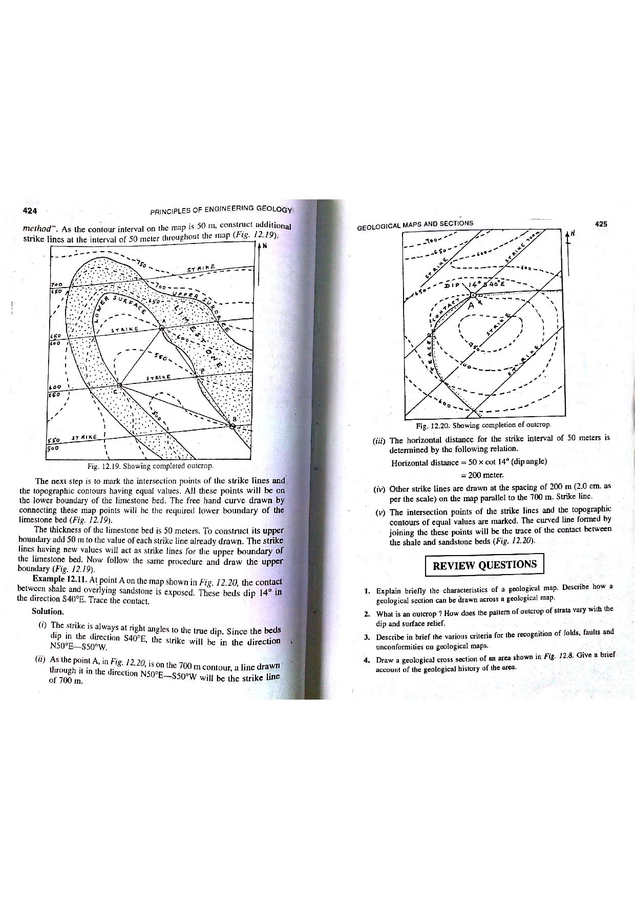

In Geographic Information Systems (GIS), spatial analysis, and geoinformatics, geoprocessing is the foundational framework for executing automated spatial operations. It accepts one or more input spatial datasets, applies rigorous analytical, topological, or mathematical transformations, and generates derived output datasets (Chang, 2019; Longley et al., 2015; Bangar, p. 219).

A geographic feature in a GIS is never merely a collection of geometric points or lines; it is an intelligent digital entity characterized by two intimately linked data components:
Because GIS data models fuse spatial geometry with relational database attributes, the input to any geoprocessing operation is fundamentally Alphanumeric (combining numbers and letters) (Bangar, p. 219).

Geoprocessing encompasses standard spatial operators that query, transform, or synthesize alphanumeric layers:
| Geoprocessing Tool | Input Geometric Type | Transformation Logic | Attribute Handling |
|---|---|---|---|
| Buffer | Point, Line, or Polygon | Generates an equidistant perimeter zone of specified distance ($r$) around features. | Inherits all alphanumeric attributes from input features. |
| Clip | Point, Line, or Polygon (Input) + Polygon (Clip Boundary) | Cuts out an input layer using the geographic boundary of another layer (cookie-cutter). | Preserves alphanumeric attributes of input layer; clip layer attributes discarded. |
| Intersect | Two or more overlapping layers | Computes the geometric intersection; outputs only areas common to all inputs. | Fuses alphanumeric attributes: Output table contains fields from all participating layers. |
| Union | Two polygon layers | Computes geometric union; retains all areas from both layers. | Combines all alphanumeric attribute tables, filling non-overlapping cells with $\text{Null}$. |
| Dissolve | Polygon or Line | Aggregates adjacent features that share an identical alphanumeric attribute value. | Merges geometric boundaries; aggregates numeric fields via $\text{SUM, MEAN, MAX}$. |
The power of geoprocessing lies in combining Boolean alphanumeric attribute queries with spatial operators:
Here, Status = 'Active' executes an alphabetic string match, while Fe_Grade >= 62.5 performs a quantitative numeric inequality. The resulting subset of features is immediately fed into spatial geoprocessing tools (e.g., buffering a $500\text{ m}$ environmental safety zone around active high-grade mines).
In engineering geology and GIS (Bangar, p. 219; Chang, Ch. 11), spatial datasets represent real-world entities through a synthesis of quantitative coordinates (numeric) and descriptive classifications (alphabetic):
Because geoprocessing algorithms process both geometric coordinates and corresponding attribute tables simultaneously, the input format is comprehensively defined as Alphanumeric.
Selecting "Numeric" accounts only for spatial coordinates, elevation models, or numeric measurements, while completely disregarding text attributes such as rock type ("Granite"), fault sense ("Thrust"), or stratigraphy ("Gondwana"). Pure numeric data cannot represent categorical GIS layers without text descriptors.
Selecting "Alphabet" accounts only for descriptive labels and ignores metric $(X, Y)$ coordinate locations, lengths, elevations, and quantitative measurements. A GIS cannot perform spatial geoprocessing without numeric coordinates.
A "datasheet" (or spreadsheet) is a tabular storage layout or software interface (such as a CSV or Excel file), not the inherent nature of the data itself. The question asks for the fundamental linguistic/numeric type of the input data, which is alphanumeric.
| Field Data Type | Category | Storage Range / Format | Representative Geological Examples |
|---|---|---|---|
| Text / String | Alphabetic / Alphanumeric | Variable length alphanumeric characters | Rock name ("Khondalite"), Chronostratigraphy ("Palaeoproterozoic"), Borehole ID ("BH-OD-21"). |
| Double / Float | Numeric | 64-bit IEEE floating point decimal | Iron ore grade ($64.25\%$), specific gravity ($2.68$), UTM Easting ($452100.5\text{ m}$). |
| Long Integer | Numeric | 32-bit signed integer ($-2 \times 10^9 \text{ to } +2 \times 10^9$) | Feature ID ($\text{FID}$), Population count, Topographic elevation in millimeters. |
| Date / Time | Alphanumeric (Formatted) | Standard timestamp (YYYY-MM-DD hh:mm:ss) | Date of drill hole completion, seismic event origin time. |
| Geometry (SHAPE) | Numeric (Coordinate arrays) | Ordered sequence of binary coordinate vertices | Polyline coordinate chains for fault traces, polygon boundary rings for mineral concessions. |
Mineral = 'Bauxite', of which $60$ have reserves $\ge 10.0\text{ MT}$, and among these, $45$ have Status = 'Operating', calculate: (a) the number of selected polygons, and (b) identify the alphanumeric data types of the three query fields.
Mineral: Text / String (Alphabetic descriptor).Reserve_MT: Float / Double (Numeric quantitative value).Status: Text / String (Alphabetic categorical state).Dissolve_Field = 'Lithology'. Calculate: (a) the number of polygons in the output feature class, and (b) the area of the dissolved Porphyritic Granite feature.
Distance = 500 m (both sides, rounded ends). Calculate the total surface area of the buffer polygon in square kilometers.
Fe_Pct. The values for the 12 boreholes are:
$$58.2, 60.1, 61.5, 62.0, 62.4, 63.0, 63.5, 64.0, 64.2, 64.8, 65.1, 65.6$$
A Spatial Join geoprocessing tool is executed with the merge rule set to MEAN. Calculate the composite average iron grade assigned to the concession polygon.
Mean_Fe = 62.87%.